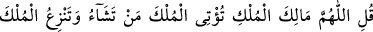
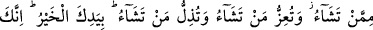
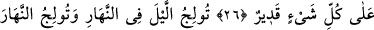
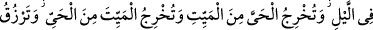
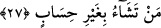

MÜLKÜN SÂHİBİ
26. (Rasûlüm!) De ki: Mülkün gerçek sahibi olan Allah’ım! Sen mülkü dilediğine
verir; dilediğinden geri alırsın. Dilediğini yüceltir; dilediğini de alçaltırsın. Her türlü
iyilik senin elindedir. Gerçekten sen her şeye kadirsin.
27. Geceyi gündüze katar; gündüzü de geceye katarsın. Ölüden diriyi çıkarır;
diriden de ölüyü çıkarırsın. Dilediğine de sayısız rızık verirsin.
Mâlikü’l-Mülk, mutlak mânada mülk denilen ne varsa, hepsinin hakiki mâliki
anlamındadır. Bu sebeple O, mülkünde dilediği şekilde tasarruf eder, istediğini yapar.
Dilediğini var eder; dilediğini yok eder, dilediğine hayat verir; dilediğini öldürür,
dilediğine azap eder; dilediğine mükâfat verir. Bunları yaparken hiçbir ortağı veya
dilediğini yapmaktan menedecek bir güç yoktur.
“Sen mülkü dilediğine verirsin.” Bu, mülke mâlik olmanın çağrıştırdığı
tasarruflardan biridir ki bu sıfat, Cenâb-ı Hakk’a hakikat olarak; başkalarına ise mecâz
yoluyla mahsûstur. Yani Allah her şeyin hakiki mâliki; kullar ise mecâzî mâlikidirler.
Âyette “vermek anlamında” “temlîk” kelimesinin değil de “îtâ” kelimesinin tercîh
edilişi de, bu ihtisâsa delâlet eder.
“Mülkü dilediğinden söküp alırsın.” Âyette geçen ilk “mülk” hakiki ve umûmîdir;
kulun memlûkiyeti de hakikidir. Diğerleri ise, mecâzî ve husûsîdir; sahiplerine
nisbetleri ise mecâzîdir.
“Dilediğinin kadrini yüceltirsin.” Dünyada veya âhirette veya her ikisinde birden
yüceltmek istediğini, yardım ve tevfikinle yüceltirsin. “Dilediğini de alçaltırsın.”
Dünyada veya âhirette veya her ikisinde birden zelîl kılarsın. Kimse buna mâni olamaz,
karşı koyamaz.
“Hayır, (yani bütün iyilikler) yalnız senin elindedir.” Burada “hayır” kelimesinin
mârife olarak gelmesi, hayrın tümüne şâmil olması içindir. Yani bütün hayırlar, Cenâb-ı
Hakk’ın yed-i kudretindedir.
Haberin takdimi ise tahsîs ifade etmektedir ki, hayrın tamamı senden başka birinin
kudretinde değil; sadece senin kudretin dâhilindedir, mânasını vermek içindir. Hayrı